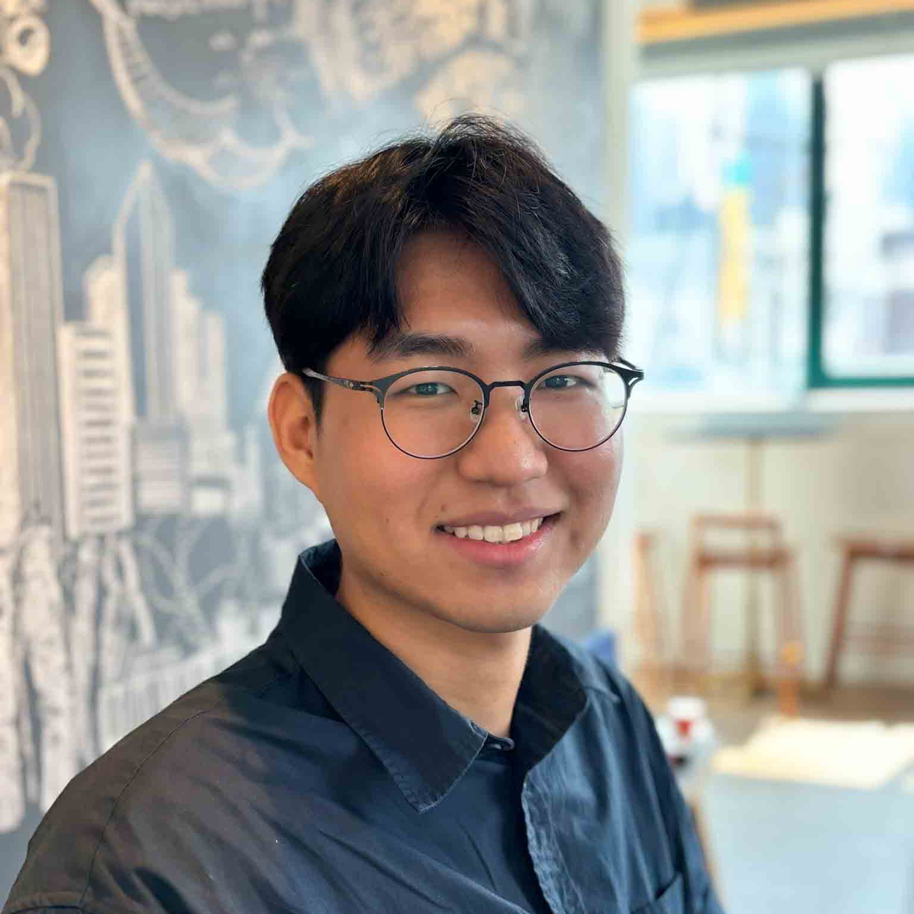
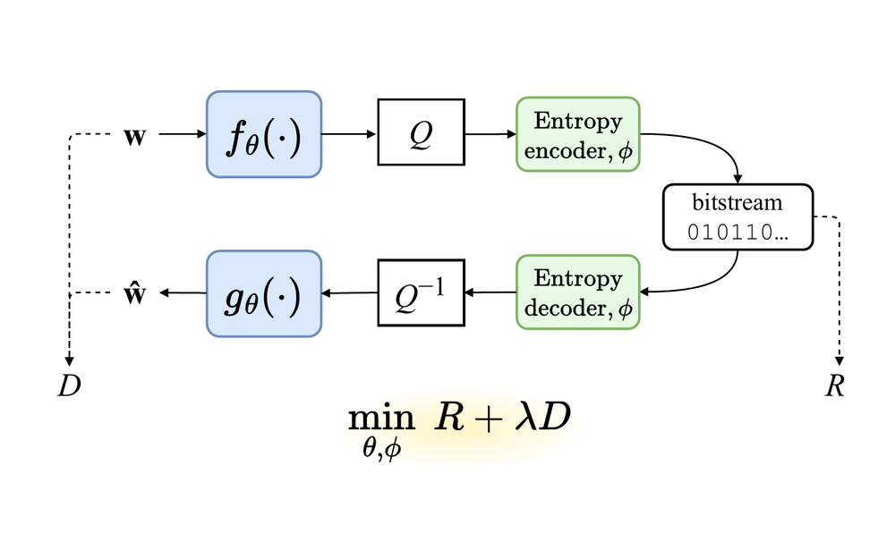
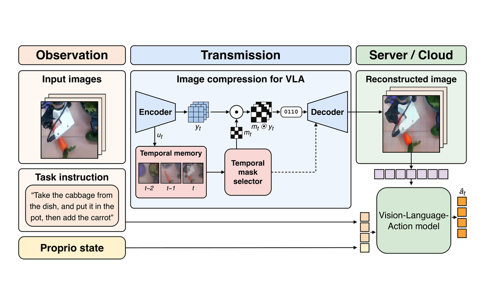
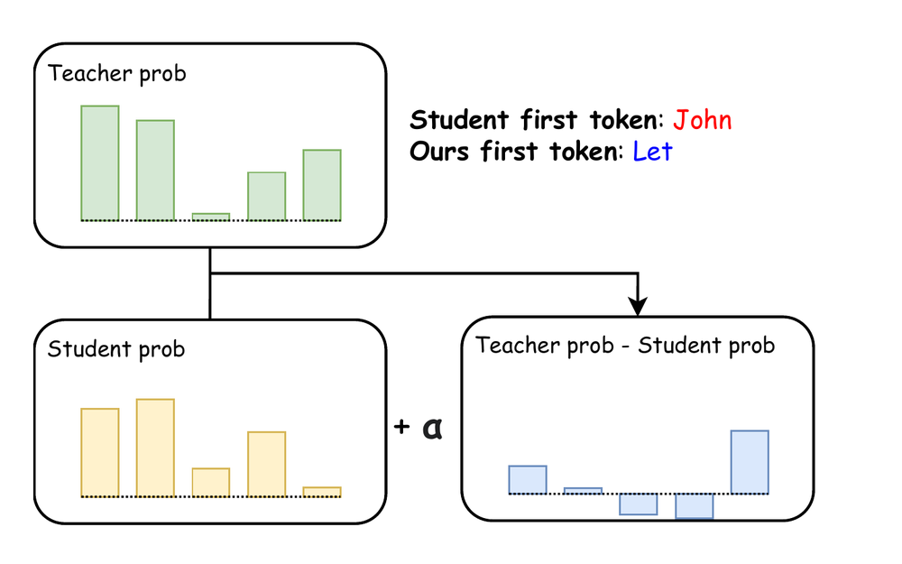
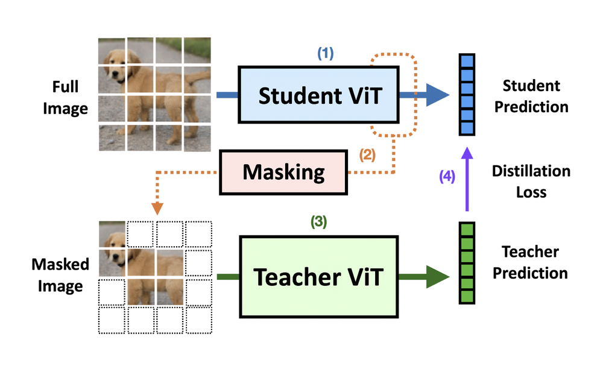

M.S. in Electrical Engineering
Pohang University of Science and Technology (POSTECH)
Efficient Learning Lab (EffL), advised by Prof. Jaeho Lee
Sep 2024 – Present
M.S. Student, Electrical Engineering, POSTECH
I work on making deep learning models cheaper to train, run and store. I’m an M.S. student in Electrical Engineering at POSTECH, in the Efficient Learning Lab (EffL), advised by Prof. Jaeho Lee, where I also received my B.S.
Efficient inference and training: model compression, quantization, knowledge distillation
Data compression: neural codecs, learned compression


ICML 2026 Workshop on Resource-Adaptive Foundation Model Inference



Pohang University of Science and Technology (POSTECH)
Efficient Learning Lab (EffL), advised by Prof. Jaeho Lee
Sep 2024 – Present
Pohang University of Science and Technology (POSTECH)
Magna cum laude. National Science and Technology Scholarship, 2020–2024
Feb 2018 – Aug 2024